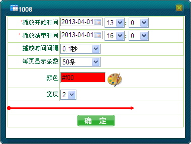
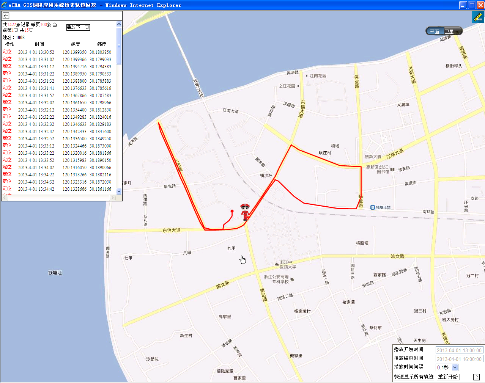
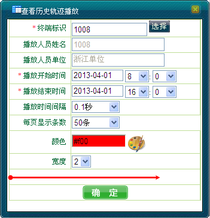

调度员可对选定移动用户在选定时间段内的运动轨迹在界面上进行回放。同时，调度员可通过地图右键操作以及呼叫面板两种方式查看用户的历史轨迹。
1）单击地图上的移动用户。
2）右键选择［应用业务/历史轨迹］，弹出用户历史轨迹播放配置对话框。
3）选择“播放开始时间”、“播放结束时间”、“播放时间间隔”、“每页显示条数”（假设为N条）以及线条的“颜色”、“宽度”。此时，在窗口的最下方会形象地显示轨迹线条的样式，如下图1所示。

图1. 查看历史轨迹播放
4）单击＜确定＞，系统会重新打开一个IE浏览器，并且在地图上，会用线条的方式显示该用户在该时间段内前N条的行驶路线，如下图2所示。

图2. 历史轨迹回放
5）单击“播放下一页”，此时在地图上会用线条的方式显示该用户在该时间段内下个N条的行驶路线。
6）单击右下角的“快速显示所有轨迹”，则会用线条的方式快速显示该用户在该时间段内所有的行驶路线。
7）关闭浏览器结束历史轨迹的播放。
1）在系统操作菜单栏中单击［调度功能/呼叫面板］，弹出“呼叫面板”对话框。
2）单击“应用业务”模块中的“历史轨迹”，弹出”查看历史轨迹播放“对话框。
3）输入播放人员的终端标识或单击右侧＜选择＞添加要查看历史轨迹的移动用户，选择“播放开始时间”、“播放结束时间”、“播放时间间隔”、“每页显示条数”（假设为N条）以及线条的“颜色”、“宽度”。此时，在窗口的最下方会形象地显示轨迹线条的样式，如下图3所示。

图3. 查看历史轨迹播放
4）单击＜确定＞，系统会重新打开一个IE浏览器，并且在地图上，会用线条的方式显示该用户在该时间段内前N条的行驶路线。
5）关闭浏览器结束历史轨迹的播放。
 说明：
说明：
单次查询历史轨迹的最大时间跨度为24个小时。
若用户在指定时间段内数据为空时，则弹出的“eTRA GIS调度应用系统历史轨迹回放”对话框的数据显示栏中显示“无历史轨迹记录”。
Copyright © 2012 Eastcom, Inc. All rights reserved. |
||